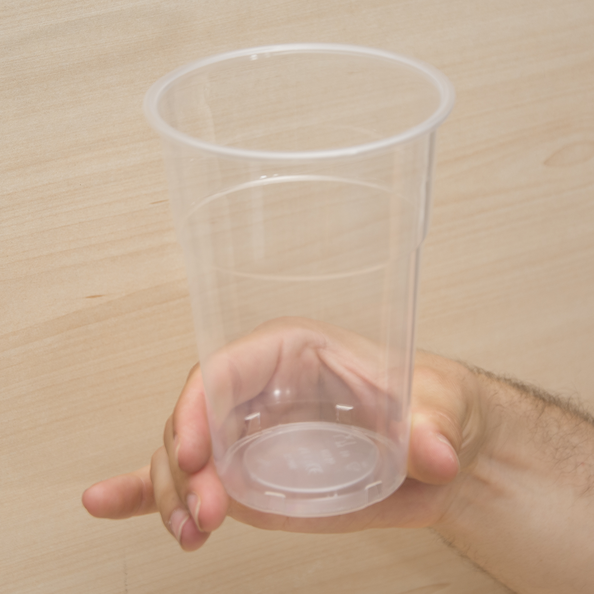

Benchmark for human-to-robot handovers of unseen containers with unknown filling
The real-time estimation through vision of the physical properties of objects manipulated by humans is important to inform the control of robots for performing accurate and safe grasps of objects handed over by humans. However, estimating the 3D pose and dimensions of previously unseen objects using only inexpensive cameras is challenging due to illumination variations, transparencies, reflective surfaces, and occlusions caused both by the human and the robot. In this paper we present a benchmark for dynamic human-to-robot handovers that is based on an affordable experimental setup that does not use a motion capture system, markers, or prior knowledge of specific object models. The benchmark focuses on containers and specifically on plastic drinking cups with an unknown amount of unknown filling. The performance measures assess the overall system as well as its components in order to help isolate elements of the pipeline that need improvements. In addition to the task description and the performance measures, we also present and distribute as open source a baseline implementation for the overall task in order to enable comparisons and facilitate progress.
The proposed benchmark aims to assess the generalization capabilities of the robotic control when handing over previously unseen objects filled (or not) with unknown content, hence with a different and unknown mass and stiffness. No object properties are initially known to the robot that must infer these properties on-the-fly, during the execution of the dynamic handover, through multi-modal perception of the scene. The benchmark requires participants to set up an inexpensive sensing system with up to two cameras. The evaluation is performed through an overall score to rank solutions as well as partial scores to determine differences between methods and provide guidance for improving single elements of a system. To encourage research in this area, we also provide a baseline solution and discuss its evaluation through the proposed benchmark in two different setups.
Protocol document and purchasing links
The task consists of three steps, namely human maneuvering, dynamic handover, and robot maneuvering. After the handover, the robot places the object on the table at a pre-defined location. Participants can use any robotic arm with at least 6 degrees of freedom (e.g. KUKA, UR5) equipped with a gripper (e.g. a 2-finger gripper or a complete robotic hand).
The setup for the benchmark includes a robotic arm, a table, selected objects, filling for the objects and four humans performing the handover. Regarding sensing: it is allowed to use up to two cameras. Touch and pressure sensors on the gripper can be used to facilitate the inference of the object's physical properties.
We select a set of objects that are challenging for both perception and robotics due to the high variability of their physical properties such as material, shape, texture and mass. Specifically, we select four drinking cups with different properties: high deformability, medium transparency (Cup 1); average deformability, low transparency (Cup 2), average deformability, high transparency (Cup 3), and no deformability, high transparency (Cup 4). Cup 4 is the plastic wine glass from the YCB object database. These cups are inexpensive and available worldwide (Protocol), have different shapes and sizes, different degrees of deformability, include textureless regions, transparencies and reflections that make the vision-based pose estimation challenging. Moreover, to further challenge the task, we vary the properties of each cup (mass and deformability) with two different amounts of rice (which are easy to purchase and - unlike liquids - harmless for the hardware): 0% (empty), and 90% (filled) of the total volume of the cup. The filling amounts are rounded to the smaller quarter of 100ml to ease the replicability of the configurations.
| Cup 1 | Cup 2 | Cup 3 | Cup 4 | |
|---|---|---|---|---|
| Grasp 1 |  |  |
||
| Grasp 2 | Grasp 3 |
Submit
Participants should complete the submission form and submit by email at corsmal-benchmark@qmul.ac.uk.
Baseline
To facilitate participation in the benchmark, we share a baseline as open source GitHub code and evaluate it on the benchmark under two setups in different laboratories, S1 and S2. The baseline estimates the centroid and the dimensions of a cup in 3D at 18 Hz in a standard desktop. The baseline in S1 uses a simpler robotic control with standard motion planning libraries (MoveIt), while the baseline in S2 also includes task-space control of the robotic manipulator, and prediction/inference of the human intention. We show below some sample results for S2. Below we show sample rsults in S1.
Sample results for subject 1 and grasp 1 while changing the handover location and cup.
| Cup 1 | Cup 2 | Cup 3 | Cup 4 | |
|---|---|---|---|---|
| Handover location 1 | ||||
| Handover location 2 | ||||
| Handover location 3 |
Sample results for handover location 2 (on front of the robot) and cup 2 while changing the subject location and human grasp.
| Subject 1 | Subject 2 | Subject 3 | |
|---|---|---|---|
| Grasp 1 | |||
| Grasp 2 |
If you use the code and/or the benchmark, please cite the publication:
Benchmark for Human-to-Robot Handovers of Unseen Containers with Unknown Filling
R. Sanchez-Matilla, K. Chatzilygeroudis, A. Modas, N. Ferreira Duarte, A. Xompero, P. Frossard, A. Billard, and A. Cavallaro
IEEE Robotics and Automation Letters (RA-L), vol.5, no. 2, Apr. 2020
Sponsors


Partners